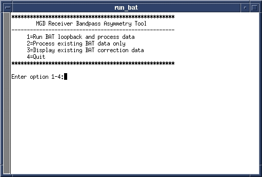
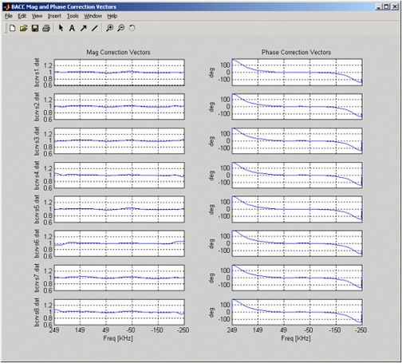

Operating Documentation
Direction 5500113, Rev# 3
Discovery MR750 3.0T Service Methods
Module Version 2.0, Version Date 7/23/07
Operating Documentation |
| Required Persons | Preliminary Reqs | Procedure | Finalization |
|---|---|---|---|
| 1 | 0 min | 5 mins | 0 min |
Due to manufacturing and component tolerance variations, the phase and magnitude bandwidth response of the analog circuits in the receiver vary from receiver to receiver. These variances can cause ghosting in some EPI prescriptions. The BACC procedure measures the frequency response of each receiver and creates a characterization that will be used to correct for these non-linearities. The BACC is a loopback characterization to measure the frequency response. The BACC procedure must be run on all receivers prior to clinical EPI scanning. BACC must be run before EPT.
| Last Update | 07/20/2007 |
| Condition | Reference | Effectivity |
|---|
Start the BAT tool:
On the Service Desktop, open the Service Browser if it is not already running.
Select the Calibration Tab.
Start the BAT tool as shown in Illustration 1.
Illustration 1: Starting BAT from the Service Desktop

The window shown inIllustration 2 will open. Type 1<Enter> to start the calibration.
Illustration 2: BAT Main Menu

Calibration takes about 3 minutes.
Verify the magnitude and phase plots look similar to Illustration 3. Magnitude plots may differ slightly at the edges, but should be relatively flat between -200Khz and +200KHz. If the graphs for some of the receivers look very different, there may be a receiver hardware problem. If all of the graphs look different, verify the Exciter operation.
Illustration 3: BACC Corrections Plots

This is the end of the calibration process. Refer toIllustration 2 again and run the next two available tests. Process existing BAT data only and Display existing BAT correction data . These are displayed in the following points. In order to exit the test, choose option 4 .
Process Existing BAT Data Only.
Use this option to reprocess loopback data without rerunning the actual loopback data acquisition (scan). This will reprocess the /usr/g/caldir/rcvresp[0-8].txt files and create the /usr/g/caldir/bcrvs[1-8].dat files. A final plot will be displayed as shown in Illustration 3.
Re-display BACC Correction Plots.
Use this option to display the /usr/g/caldir/bcrvs[1-8].dat file plots. This will display the plots shown in Illustration 3. In order to exit the tool, choose option 4.
The scanner should automatically perform a [Reset TPS] upon exiting the tool. If the scanner does not perform a automatic [Reset TPS], then perform a manual reset before continuing. The tool itself will not shut down until the reset is complete.
Do a test scan to ensure proper system operation before turn over to the customer.